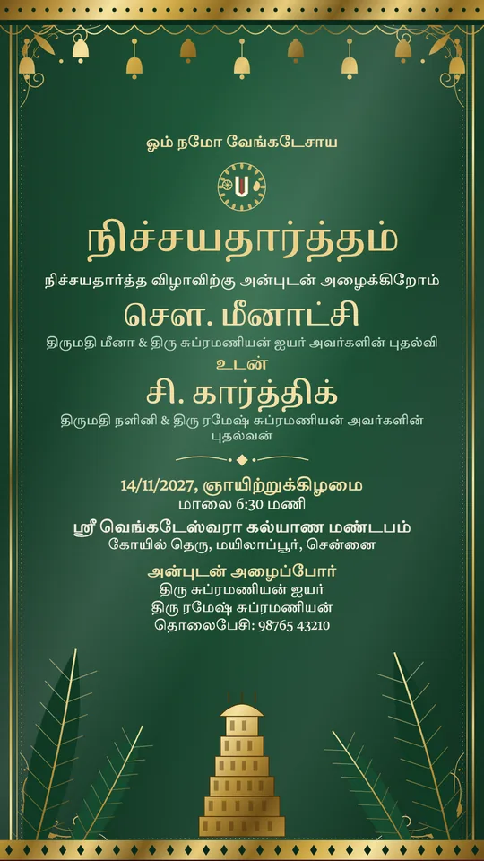

Gujarati · Hindi · Marathi · Punjabi · Tamil
Tamil kalyana pathirikai and invitation designs
A Tamil wedding invitation is a kalyana pathirikai (கல்யாண பத்திரிகை), or more formally a திருமண அழைப்பிதழ். It usually opens with an invocation to the family deity, gives the muhurtham as a window of time rather than a single hour, names the bride as சௌ. and the groom as சி., and closes with அன்புடன் அழைப்போர், the relatives who are inviting you. The engagement is the நிச்சயதார்த்தம் and the turmeric bath before the wedding the மஞ்சள் நீராட்டு.
The three designs below have Tamil as their own language, one each for the engagement, the turmeric bath and the wedding, and all three open with ஓம் நமோ வேங்கடேசாய. If your family prays to another deity, change the invocation line to your own. Kanchipuram Temple Silk is a six-page wedding card; the other two are a single card. Any design can be switched to another language in the editor, and any other design can be switched to Tamil, which fills in the Tamil sample wording.
With phonetic typing on, type names in English letters (meenakshi, karthik) and the editor turns each word into Tamil script as you type. Press Esc to keep a word in English.
For the wording itself, read Tamil wedding invitation wording.
Ring Ceremony

Nischayathartham Banana Leaf
Ring Ceremony · Tirupati Balaji
Banana leaves, a gopuram and gold bells on deep green for the நிச்சயதார்த்தம், when the two families formally agree to the match.
Haldi

Mangala Snanam Turmeric Bath
Haldi · Tirupati Balaji
For the மங்கள ஸ்நானம், the turmeric bath before a Tamil wedding, in turmeric orange with a brass kalash and palm fronds.
Wedding (Vivah)

Kanchipuram Temple Silk
Wedding (Vivah) · Tirupati Balaji
The kalyana pathirikai in Kanchipuram silk colours, with the muhurtham window, a kalyana mandapam venue and the அன்புடன் அழைப்போர் block. Six pages, with the mappillai azhaippu and mangalya dharanam on the wedding-day page.
Looking for another ceremony or language? See every design by ceremony.